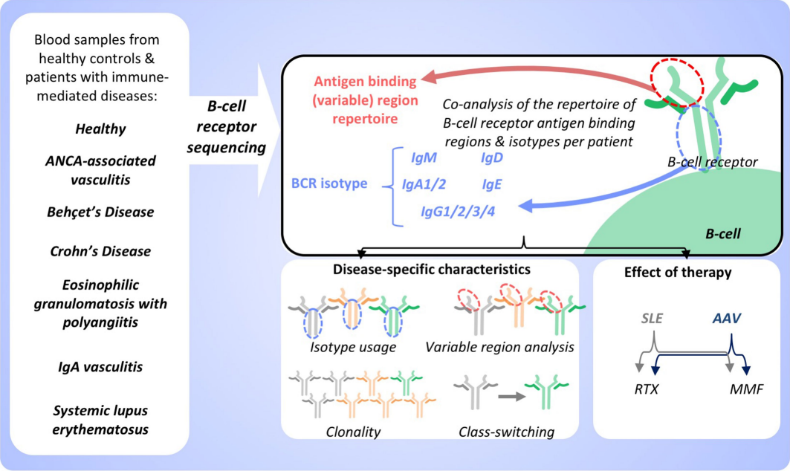

B cells are important in the pathogenesis of many, and perhaps all, immune-mediated diseases. Each B cell expresses a single B cell receptor (BCR), and the diverse range of BCRs expressed by the total B cell population of an individual is termed the ‘BCR repertoire’. Our understanding of the BCR repertoire in the context of immune-mediated diseases is incomplete, and defining this could provide new insights into pathogenesis and therapy.
During the development of B cells in the bone marrow (or fetal liver), recombination of immunoglobulin genes forms the ‘naive’ BCR repertoire, which is modified by the removal or suppression of self-reactive B cells to reduce the chance of autoimmune disease3 (although 20–40% of B cells remain autoreactive4). Further diversification of the repertoire occurs after B cells respond to antigen. Many B cells undergo ‘isotype switching’, in which stepwise DNA deletion and recombination from immunoglobulin M (IgM) generates downstream isotypes (IgG1, IgG2, IgG3 and IgG4, IgA1 and IgA2, IgD and IgE) that confer distinct functional characteristics and roles in disease. Delineation of isotypes is thus vital for a full analysis of the BCR repertoire. Further diversification of BCRs occurs in specialized germinal centres, in which somatic hypermutation (SHM) of genes that encode the variable (V) regions of antibodies may enhance BCR affinity and specificity. This diversification of B cell clones after exposure to antigen is tempered by tolerance checkpoints to reduce the risk of autoimmunity. The peripheral BCR repertoire is thus a composite of both the naive repertoire and that generated by antigenic encounter.
1. Repertoire-wide sequence properties with functional relevance
1) Isotype frequencies Biases in the usage of different isotypes across volunteers can be functionally informative, as certain isotypes are linked with characteristic functions (e.g. the role of IgA in muscosal immunity). Differential isotype usage relative to a healthy baseline could highlight certain B-cell compartments as centers of a developing immune response. It could also suggest a sampling bias that can impact functional interrogation; if a BCR-seq dataset contains 90% IgM and only 5% IgG sequences, then the functional signal from plasma cells can be expected to be significantly diluted.
2) CDR Lengths CDR length usage differences from baseline can indicate a whole-repertoire functional shift driven by selection toward certain immunodominant pathogen epitopes. This is particularly evident in the more variable CDRH3 loop. Infection with the human immunodeficiency virus, for example, has been shown to shift the lengths of the CDRH3s in the IgG repertoire toward significantly longer lengths relative to healthy individuals or those with chronic cytomegalovirus infection .
3) Gene usage profiles Each read can be aligned to a reference set of known germline genes using a variety of programs including IMGT/V-Quest91 and IgBlast92 (for a nucleotide sequence) and ANARCI93 (for an amino acid sequence) to infer its genetic origins. Gene usages can be considered on a per-segment basis (e.g. IGHV only) or pairing frequencies can be considered between gene transcripts encoding the same chain (e.g. IGHV-IGHJ usages), or different chains (e.g. IGHV-IG[K/L]V usages). They can be used to identify similar gene expression pattern drifts common in diseased patients vs. healthy individuals or those with an unrelated disease. Repertoire somatic hypermutation distributions can also be derived as a byproduct of gene assignment. This can be useful for distinguishing whether an immune response is driven by naïve or affinity-matured B-cells; for example, Galson et al. showed that patients with lower COVID-19 disease severity tended to respond with a higher proportion of unmutated sequences.
4) Structural Annotation of AntiBodies (SAAB+)
2. Repertoire clustering to find BCRs with similar epitope complementaries
1) Clonotyping
2) Paratyping
3) Ab-Ligity
4) Repertoire Structural Profiling
3. Comparing BCR-seq data to reference antigen-specific datasets
Any of the above tools can be used to compare the properties of the repertoire sequences against molecules shown experimentally to bind the target of interest in antigen-specific datasets, such as CoV-AbDab37 or an antigen-filtered version of the Structural Antibody Database (SAbDab).105 Detecting hits to these databases can be used to make a case for the functional ‘publicness’ of a response BCR/antibody, if the same functional signal was observed multiple times across independent investigations. For example, Galson et al.94 compared the convergent VH clonotypes from SARS-CoV-2 patients with CoV-AbDab,104 finding 10 clonal matches to molecules known to engage SARS-CoV-2 or a related coronavirus. As each CoV-AbDab entry comes with an array of metadata, this knowledge facilitated the prioritization of antibody clones with heightened neutralization potential for further preclinical development. Several other papers have since performed clonotype comparison between BCR-seq data and CoV-AbDab111–114 to learn from the growing body of knowledge (over 4,150 sequences as of 26th October 2021) on antibodies able to engage coronaviruses.